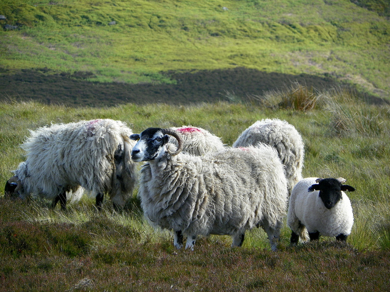
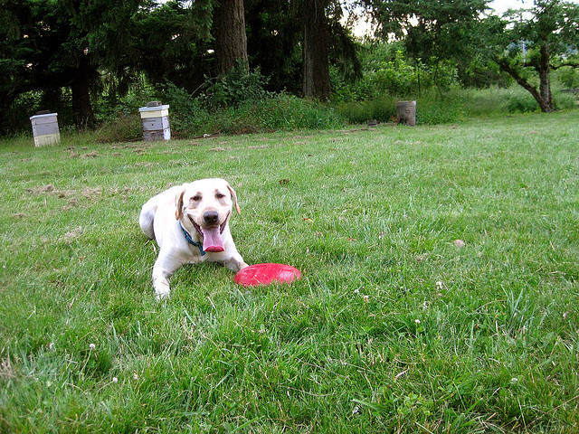

Learning to Look
A Foundation for Visual Understanding
1Aalto University 2ELLIS Institute Finland 3University of Oulu

Overview
Vision-language models can describe objects that are not present in an image. We ask whether a model knows where it is looking before interpreting what it sees.
We introduce Look, a task in which the model identifies the region of an image available to it. We construct examples by cropping images and retaining the crop’s position information from the full image. The crop coordinates provide supervision without semantic annotation.
Existing VLMs struggle to localize the visible region. Fine-tuning on Look improves localization and visual-input awareness. We also introduce VisABench to measure whether a model’s answers depend on the presence of visual evidence.
The LOOK task
We resize the image to the model’s patch grid, then sample a rectangular crop aligned to complete visual tokens. The model receives only the crop pixels, with positional information inherited from the full image. It predicts the crop’s bounding box in full-image coordinates.

Crop example
Move the crop across the photograph. The model receives the selected pixels and predicts their location within the full image.

Coordinates are normalized to 0–1000, relative to the full image.
VisABench
VisABench asks the same object-presence questions under three conditions: the correct image, no visual evidence, and a different image. In the no-evidence condition, visual features are withheld while the input sequence layout is preserved.
Is there a sheep in the image?
Real image
No visual evidence
Different image

Fine-tuning on Look reduces hallucinated object presence when evidence is absent. The paper reports these results alongside real-image performance, position-reset controls, and downstream evaluations. Results on downstream benchmarks are mixed.
See the paper for the full experiments and the evaluation instructions for data requirements and commands.
Quick demo
Generate a crop from the sheep photograph and save its target box as a training example. The demo runs on CPU.
git clone https://github.com/wenshuaizhao/look.git
cd look
pip install -r code/requirements-demo.txt
python code/examples/quickstart.pyThe output is saved in work/quickstart/: context.png, crop.png, and look.jsonl. See the repository for training and evaluation.
Citation
@misc{zhao2026learningtolook,
title={Learning to Look: A Foundation for Visual Understanding},
author={Wenshuai Zhao and Yihao Wang and Benjamin Robson and Juho Kannala and Arno Solin},
year={2026},
url={https://github.com/wenshuaizhao/look}
}